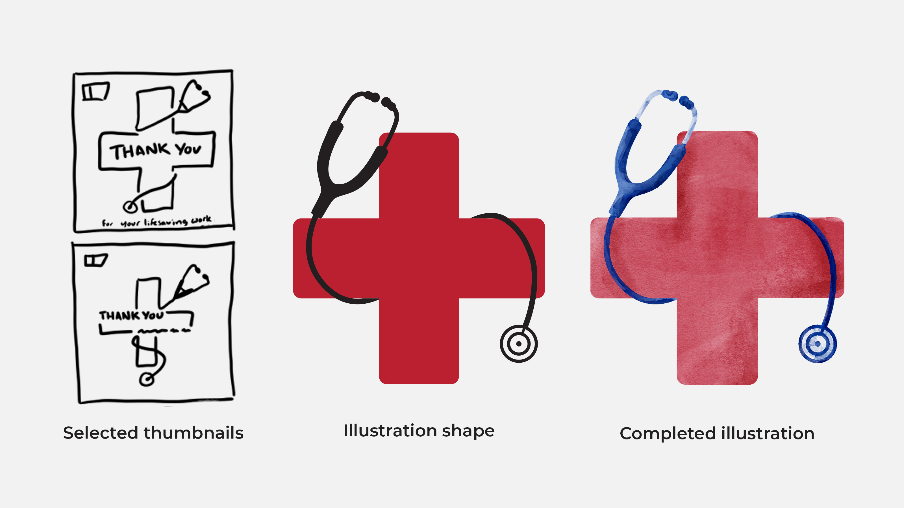
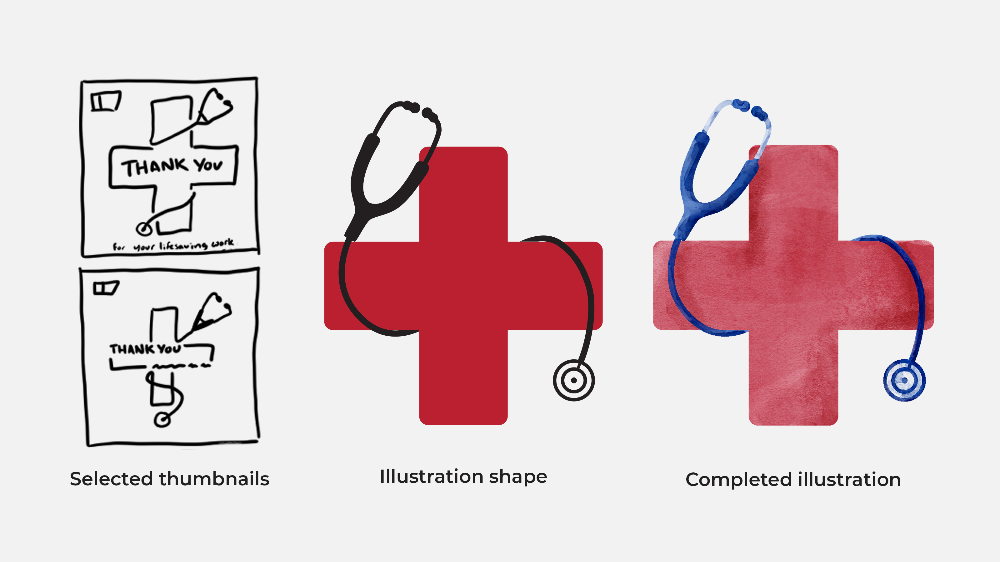
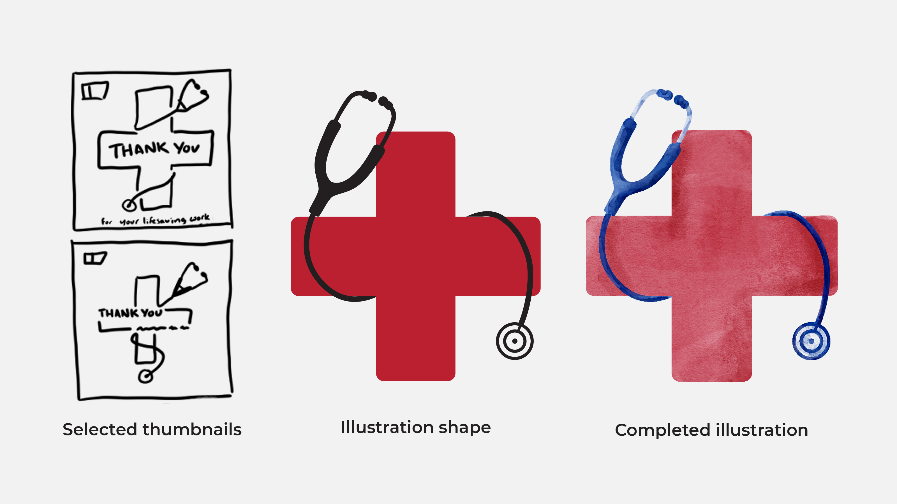
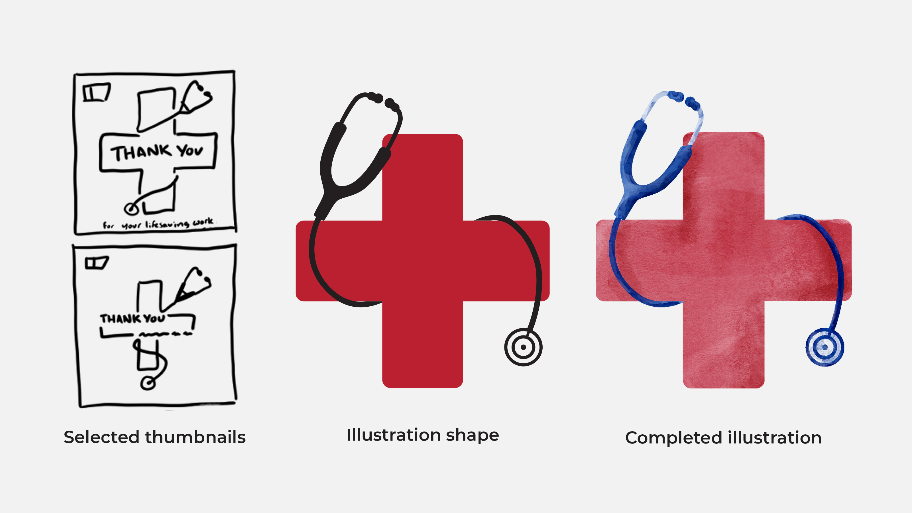

Create an animated thank you card and static illustration.
In the middle of 2020, my client was approached by the American Cancer Society about creating an animated thank you card for healthcare workers. We decided to keep the motion component simple and my client asked me to explore a watercolor-inspired illustration style.
Starting out, I sketched layout and illustration ideas that referenced healthcare work and developed an early motion study for review. Once we determined the direction we wanted to go, I refining the digital illustration and motion graphic, and exported the graphic for use.